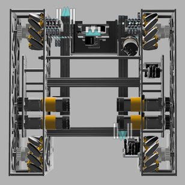
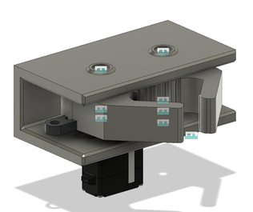

01 — Strategy
Designing for the Game
Our goal was a robot that could win the league championship by scoring 8+ specimens per match. Since maneuverability mattered less this season, we went with a large 18" chassis, prioritized reach with two sets of slides, and chose a level 2 ascent. The extra 15 points for level 3 weren't worth the cycling time we'd lose.


02 — Iteration
Three Robots in One Season
- Iteration 1 (Meet 1): a mini drivetrain with a single jointed arm that could only reach the low basket. We built it as a stand-in while the custom robot was finished.
- Iteration 2 (Meet 2): the custom chassis. Its ¼" side plates were too heavy, there was no room for a hang, and the slides didn't have enough stages.
- Iteration 3 (Meet 3 → States): plates recut to ⅛" and made taller, a fourth vertical slide stage added, Axon servos for the heavier joint, and a hang rebuilt with a motor on each side after the single-motor version broke at League Championships.
Drivetrain
1:1 belt drive on 3D-printed pulleys, with HTD5 belt lengths calculated from pulley geometry. 435 RPM motors and a slot for belt tensioning.
Structure
Custom 6061 aluminum side plates, with lift mounts checked using Fusion 360 structural analysis.
Claw
A 3-step, 4-servo subsystem that rotates to match a sample's angle anywhere on the field and spans both horizontal slides for stability.
Hang
Worm gear and axle for torque, with two motors so the robot lifts evenly.



03 — Software
Autonomous & Driver Control
Autonomous uses two sprung dead-wheel odometry pods fused with a Pinpoint IMU, which updates the robot's position every 0.65 ms. It's tuned in RoadRunner with PID control and scores 43 points from either the basket or the rung.
In teleop, set positions move the slides and claw to scoring spots with one button. A "pecking" routine retries missed grabs quickly, and the slow mode follows the curve below for fine control. A correction algorithm also keeps the horizontal slides level as the lift rises.